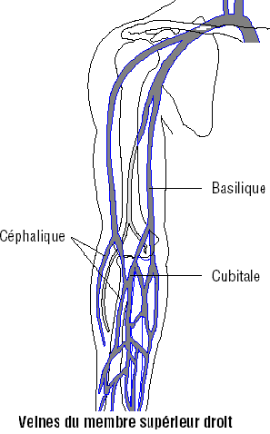
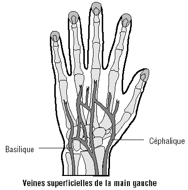

Bienvenue Sur Medical Education
L'hemoculture
DefinitionL'hemoculture est un prelevement sanguin sterile dont la culture va permettre la mise en evidence de la presence de germes aerobies et ou anaerobies. Il permet donc de poser un diagnostic pour savoir si l'etat est septicemique ou bacteriemie.
- Germes aerobies : germes ayant besoin d'oxygene pour se developper.
- Le flacon aerobie doit contenir un peu d'air pour permettre la culture des germes aerobies, si le prelevement ne permet pas l'introduction d'air dans le flacon, il faut injecter un peu d'air dans celui-ci a la fin du recueil.
- Germes anaerobie : germes n'ayant pas besoin d'oxygene pour se developper.
- Le flacon anaerobie ne doit pas contenir d'air pendant et apres le prelevement.
- Soin infirmier sur prescription medicale : art. R.4311-7 decret 2004-802 du 29/07/2004
Indications
- Hyperthermie – hypothermie.
- Pic febrile, frissons.
- Bilan infectieux.
- Realisation d'un antibiogramme.
Materiel
- Flacons d'hemocultures pour differencier les germes :
- 1 flacon d'hemoculture aerobie : germes ayant besoin d'oxygene pour se developper.
- 1 flacon d'hemoculture anaerobie : germes n'ayant pas besoin d'oxygene pour se developper.
- Corps de pompe a usage unique (type vacutainer) sterile si possible.
- Aiguille epicrenienne equipee d'une tubulure et d'un adaptateur au corps de pompe ou aiguille de prelevement s'adaptant au corps de pompe.
- Garrot.
- Protection papier absorbante a usage unique.
- Sparadrap.
- Produits pour l’antisepsie :
- Respecter les memes gammes de produit : polyvidone iodee ou chlorexidine.
- Savon antiseptique.
- Serum physiologique ou eau sterile.
- Antiseptique dermique.
- Gants steriles a usage unique.
- Compresses steriles.
- Etiquettes laboratoire d'identification patient.
- Bons d'analyses laboratoire, avec pochette de transport.
- Sac a elimination des dechets.
- Conteneur a dechets contamines piquants et tranchants.
- Desinfectant de surface et chiffonnette.
- Necessaire a l'hygiene des mains.
| Les aiguilles | |||
| Couleur | Gauge | Diametre | Utilisation |
| Jaune | 30 Gauges | 0,30 mm | Injection SC / intra-dermique |
| Gris | 27 Gauges | 0,40 mm | Injection SC |
| Brun | 26 Gauges | 0,45 mm | Injection SC |
| Orange | 25 Gauges | 0,50 mm | Injection SC |
| Bleu | 23 Gauges | 0,60 mm | Injection SC / IV / IM - Prelevement IV |
| Noir | 22 Gauges | 0,70 mm | Injection IM / IV - Prelevement IV |
| Vert | 21 Gauges | 0,80 mm | Injection IM / IV - Prelevement IV |
| Jaune | 20 Gauges | 0,90 mm | Prelevement IV |
| Creme | 19 Gauges | 1,10 mm | Prelevement IV |
| Rose | 18 Gauges | 1,25 mm | Pompeuse -Transfert |
| Blanc | 16 Gauges | 1,60 mm | Pompeuse -Transfert |
| SC : sous-cutane IV : intra-veineux IM : intra-musculaire | |||
Realisation du soin
Installation
- Verifier la prescription medicale.
- Prevenir le patient.
- Installer le materiel apres verification des dates de peremptions et de l'integrite des emballages.
- Installation sur une surface propre et desinfectee au prealable.
- Installer le reniforme et le container e dechets contamines piquants loin du materiel propre.
- Respecter le triangle d'hygiene, de securite et d'ergonomie : Propre (materiel) – Patient – Sale (poubelles).
- Effectuer un lavage simple des mains ou effectuer un traitement hygienique des mains par frictions avec une solution hydro-alcoolique : hygiene des mains.
- Ouvrir le champ des gants steriles et y deposer aseptiquement l'aiguille epicranienne.
- Ouvrir aseptiquement les paquets de compresses et les imbiber avec le savon antiseptique (mettre un peu de serum ou eau sur le savon antiseptique afin de le diluer), le serum physiologique, l’antiseptique dermique, laisser un paquet de compresses seches.
Les zones de prelevement :
- Prelevement sanguin par ponction veineuse.
- Prelevement sanguin par ponction arterielle.
- Prelevement sanguin sur un catheter central ou une chambre implantable.
- Prelevement sanguin sur un catheter arteriel : il est deconseille d'effectuer des prelevement sanguin pour une recherche de microbiologie (type hemoculture) sur un catheter arteriel puisque le flux sanguin arteriel est trop important pour pouvoir capter efficacement les germes dans le catheter arteriel.
- Mettre le garrot et verifier la presence d'un pouls arteriel en contrebas (pouls radial), sinon, risque de thrombose.
- Choisir la veine a ponctionner.
- Favoriser la vasodilatation de la veine, ce qui rend le geste plus facile :
- Demander au patient de serrer le poing.
- Mettre le bras en declive.
- Tapoter la veine.
- Mettre un linge chaud sur l’avant bras (si necessaire).
Choix de la veine du membre superieur

Preparation
- Mettre la protection sous la zone de ponction.
- Effectuer un lavage antiseptique des mains ou effectuer un traitement hygienique des mains par frictions avec une solution hydro-alcoolique : hygiene des mains.
- Mettre les gants steriles.
- Pratiquer une antisepsie de la peau en 4 temps :
- Proceder en partant du bas (de la main) et en allant vers le haut (vers le cœur) ce qui permet de desinfecter sous les poils.
- Aller de l'exterieur vers l'interieur = faire un cete, l'autre cete et terminer par le milieu (site de ponction).
- Ne jamais repasser a un meme endroit.
- Utiliser une compresse par passage puis la jeter dans le sac a dechets.
- Respecter le temps de contact de l'antiseptique.
- Nettoyer avec le savon antiseptique.
- Rincer avec le serum physiologique ou l'eau sterile.
- Secher avec des compresses steriles seches.
- Appliquer l'antiseptique dermique.
- Adapter l'aiguille sur le corps de pompe en le maintenant avec une compresse sterile pour ne pas se desteriliser si utilisation d'un corps de pompe non sterile.
- Diriger le biseau de l'aiguille vers le haut : ce qui facilite la ponction et diminue l'acte douleur.
- Maintenir la veine et la ponctionner.
- De la main non dominante maintenir l'aiguille, et de la main dominante, inserer les flacons dans le corps de pompe :
- Prelever en premier le sang dans le flacon aerobie : puisque l'aiguille et la tubulure contiennent de l'air, ce qui permettra aux germes aerobies de se developper. En l'absence d'introduction d'air dans le flacon lors du prelevement, il faut injecter un peu d'air dans celui-ci e la fin du recueil.
- Prelever en second le sang dans le flacon anaerobie.
- Tout en maintenant l'aiguille, desserrer le garrot d'une main.
- Placer une compresse imbibee d'antiseptique sur le point de ponction.
- Retirer l'aiguille et comprimer le point de ponction pour eviter un hematome.
- Jeter immediatement l'aiguille et le corps de pompe.
- Enlever et jeter les gants.
- Mettre une compresse propre et un sparadrap sur le point de ponction.
- Eliminer les dechets et desinfecter le materiel utilise.
- Effectuer un lavage simple des mains ou effectuer un traitement hygienique des mains par frictions avec une solution hydro-alcoolique : hygiene des mains.
- Verifier la concordance des etiquettes et de l'identite du patient puis etiqueter le flacon, remplir les bons d'analyse et acheminer les flacons au laboratoire d'analyse ou en les ranger a l'interieur d'une etuve (37eC) a defaut de l'acheminement immediat.
- Transmission : heure de prelevement, nombres de prelevements (ne1, ne2, ne3,...), types de flacons preleves, temperature du patient, reactions du patient.
Risques et complications
- Hematome au point de ponction : bien comprimer le point de ponction apres le prelevement.
- Defaut de reflux du sang : non ponction de la veine, transpercement de la veine, veine trop ou pas assez comprimee.
- Douleur.
- Malaise vagal : stopper le soin, mettre le patient en declive.